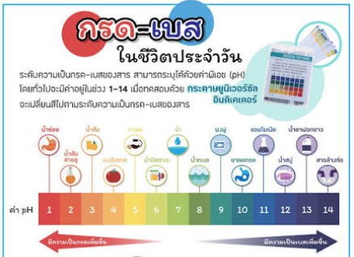

กรด-เบส
กรด คือ สารประกอบที่มี H และเมื่อละลายน้ำจะแตกตัวให้ H+ หรือ H3O+ เบส คือ สารประกอบที่มี OH และเมื่อละลายน้ำจะแตกตัวให้ OH- ข้อจำกัดของทฤษฎีนี้คือ สารประกอบต้องละลายได้ในน้ำ และไม่สามารถอธิบายได้ว่า ทำไมสารประกอบบางชนิดเช่น NH3 จึงเป็นเบส Bronsted-Lowry Concept กรด คือ สารที่สามารถให้โปรตอน (proton donor)สารที่สามารถรับอิเลคตรอนคู่โดดเดี่ยว (electron pair acceptor) แก่สารอื่น เบส คือ สารที่สามารถรับโปรตอน (proton acceptor) สารที่สามารถให้อิเลคตรอนคู่โดดเดี่ยว (electron pair donor) แก่สารอื่น ทฤษฎีนี้ใช้อธิบาย กรด เบส ตาม concept ของ Arrhenius และ Bronsted-Lowry ได้ และมีข้อได้เปรียบคือสามารถอธิบาย กรด เบส ในกรณีที่เกิดปฏิกิริยาระหว่างกัน และได้สารประกอบที่มีพันธะโควาเลนซ์ เช่น OH - (aq) + CO2 (aq) HCO3- (aq) BF3 + NH3 BF3-NH3